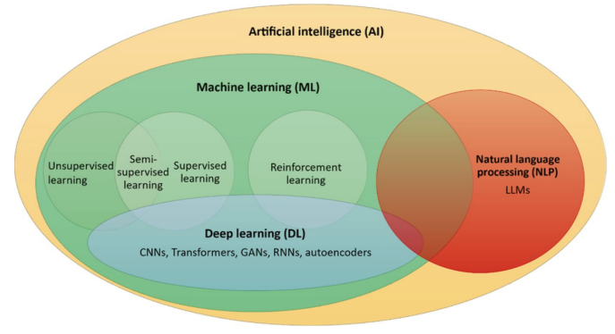

Overview
This lesson covers the fundamentals of artificial intelligence — what types of AI exist, what kinds of data they use, and how AI models are built. Understanding these distinctions will help you evaluate which AI tools are relevant to your practice and how they work under the hood.
Introduction to AI
Start with this accessible overview of what artificial intelligence is, how it works, and why it matters in healthcare and beyond.

The AI Landscape

Source: [citation needed]
Artificial intelligence (AI) is the umbrella term for any computer system that performs tasks we would normally say require human intelligence. The terms below are often used interchangeably, but they describe categories of different sizes that only partly overlap. Working from the outside in:
- Machine learning (ML) — systems that learn patterns from data
instead of following rules a programmer wrote by hand.
- Supervised learning — learns from labelled examples. Example: a model trained on graded retinal photographs to detect diabetic retinopathy.
- Unsupervised learning — finds structure in unlabelled data. Example: clustering ICU data to identify four distinct sepsis phenotypes.
- Reinforcement learning — learns by trial and error from feedback. Example: the "AI Clinician" learning fluid and vasopressor strategies in sepsis.
- Deep learning (DL) — ML using multilayer neural networks, which
learn features directly from raw data (pixels, waveforms, text).
- Convolutional neural networks (CNNs) — images. Example: classifying skin lesions at dermatologist level.
- Recurrent neural networks (RNNs) — sequences, e.g. vital-sign trends over time.
- Transformers — the architecture behind today's language models.
- Autoencoders — compress data to its essentials, useful for denoising and anomaly detection.
- Natural language processing (NLP) — the area of AI concerned with understanding and generating human language: clinical notes, discharge summaries, patient questions. Most modern NLP is deep learning, which is why it overlaps ML and DL rather than sitting inside or outside them. Example: large language models (LLMs) such as the ones behind chatbots and ambient scribes.
Dive deeper into the types of AI models and the major branches of the field. These two videos map directly to the diagram above — pay attention to how machine learning, deep learning, and NLP differ.


Data Types in Radiology AI
AI models in radiology are only as good as the data they learn from. Different types of data feed different types of models. Explore the four major data categories below to understand what goes into building and running radiology AI.
Medical Images (DICOM)
The primary input for most radiology AI
Radiology AI models predominantly work with medical images stored in DICOM format (Digital Imaging and Communications in Medicine). Each DICOM file contains both pixel data and rich metadata — patient demographics, acquisition parameters, slice thickness, and more. Convolutional neural networks (CNNs) process the pixel data, while metadata can inform pre-processing and model selection.
Radiology Applications
- Chest X-ray AI for pneumothorax, cardiomegaly, and nodule detection
- CT pulmonary angiography for automated pulmonary embolism triage
- MRI brain for stroke detection and large-vessel occlusion alerts
- Mammography AI for breast lesion detection and density classification
Radiology Reports & Clinical Text
Free-text processed by NLP models
Radiology reports, clinical notes, and referral letters contain critical diagnostic information in unstructured free text. Natural language processing (NLP) and large language models (LLMs) can extract findings, generate impressions, flag follow-up recommendations, and convert narrative reports into structured data for downstream analytics.
Heart size is normal. Lungs are clear bilaterally.
No pleural effusion or pneumothorax.
Mediastinal contours are within normal limits.
No acute osseous abnormality.
IMPRESSION:
No acute cardiopulmonary process.
Radiology Applications
- Auto-generating structured impressions from radiology report findings
- Extracting follow-up recommendations (e.g., "recommend CT in 3 months")
- Flagging critical or unexpected findings for radiologist review
- Ambient scribes that draft reports from dictated speech in real time
Structured / Tabular Data
Patient demographics, labs, and clinical variables
Structured data from the electronic health record (EHR) — demographics, lab values, vitals, prior diagnoses, and exam history — feeds traditional machine learning models and augments image-based AI. This data is organized in rows and columns and can be used for risk scoring, exam protocoling, and clinical decision support.
| Variable | Value | Type |
|---|---|---|
| Age | 67 | Numeric |
| Sex | Female | Categorical |
| Creatinine | 1.4 mg/dL | Numeric |
| Prior CT (90d) | Yes | Boolean |
| Clinical Indication | R/O PE | Text |
| Contrast Allergy | No | Boolean |
Radiology Applications
- Automated exam protocoling based on clinical indication and patient history
- Risk scoring for contrast-induced nephropathy using labs and prior exams
- Predicting no-show rates for scheduling optimization
- Integrating clinical context with image AI for multimodal diagnosis
Annotations & Labels
The ground truth that supervised models learn from
Before a supervised AI model can learn, it needs labeled training data — expert annotations that serve as the "answer key." In radiology, these annotations are created by radiologists and can take several forms: classification labels (normal vs. abnormal), bounding boxes around lesions, pixel-level segmentation masks, or structured measurements (e.g., RECIST). The quality and consistency of these annotations directly determines model performance.
Radiology Applications
- Radiologist-drawn ROIs used to train chest X-ray nodule detectors
- Pixel-level organ segmentation for radiation therapy planning
- RECIST measurement annotations for oncology treatment response tracking
- Multi-reader consensus labels to reduce inter-observer variability